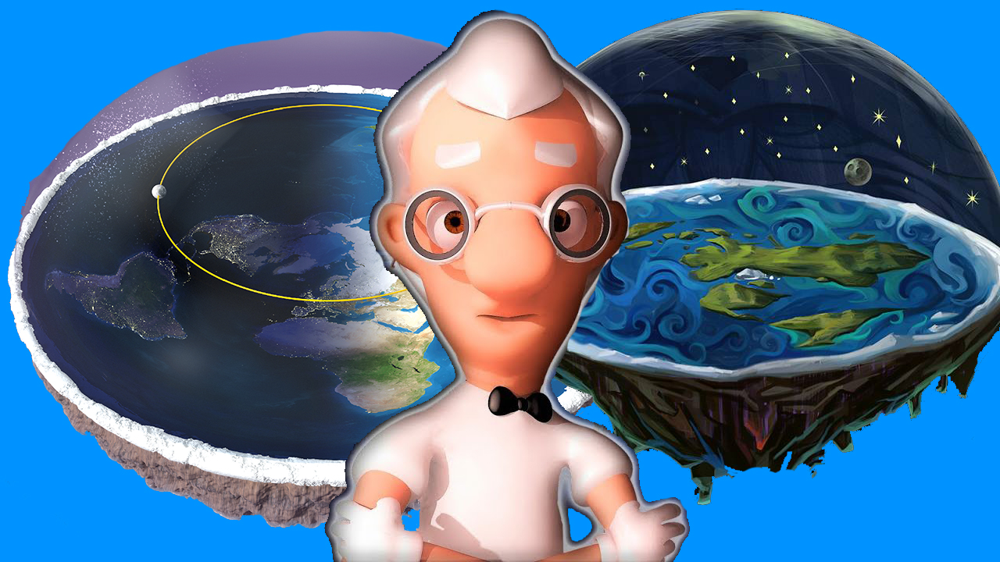

INÍCIO
Novas Evidências
Notícias Recentes
Olavo de Carvalho se revela terraplanista e se junta ao grupo da verdade. Veja mais na Reportagem da Revista Gaúcha "GaúchaZH".
Professor Terra Plana revela estar trabalhando para a volta do seu canal com um conteúdo que promete calar a boca dos globalistas. Veja o Canal.
O Ministro do Gabinete de Segurança Institucional General Heleno mostrou claramente no vídeo sua posição em relação à verdade. Veja com muita atenção. Vídeo por Gilmar de Alcântara.